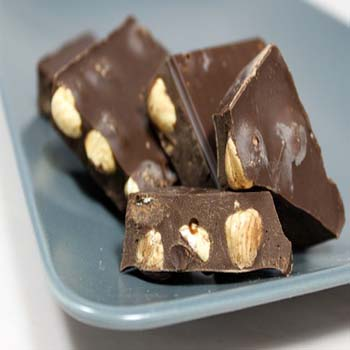

Gianduja Chocolate

What's gianduja? An exotic rainforest berry? A rude Italian insult? An obscure European city-state? Gianduja (pronounced zhahn-DOO-yuh) is an Italian confection made of chocolate and 30% hazelnut paste. Almond and walnut gianduja exist as well, but they're very rare.
In the United States, chocolate bars usually come in three varieties: milk, dark, and white, but in Italy, gianduja is a popular fourth variety. Beside chocolate bars, gianduja comes in soft forms too. The nutty chocolatey filling is a popular center for bonbons and is often found in other sweet treats like mousse and gelato.
Gianduja is usually lighter than dark chocolate and slightly darker than milk chocolate.The hazelnuts have to be ground up and mixed with the chocolate for it to be called gianduja.
Spreadable gianduja—which can go on toast, crackers, or even in crepes—is wildly popular in Europe, and increasingly more in the United States. You've probably heard of Nutella, no? Nutella was originally called "Crema Gianduja."
So where does the word "gianduja" come from? The term originated in the 17th century in the city of Turin, the capital of the Piedmont region of northern Italy. Before it had any chocolate connotation, Gianduja was a marionette character. Later, when chocolatiers were short on cocoa beans during the Napoleonic blockade, they combined hazelnut and chocolate and named their new concoction "gianduja," just like the familiar character. Gianduja was a delicious way to make their precious cocoa go further (think chicory and New Orleans-style coffee).